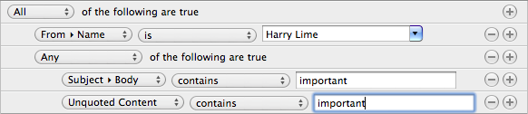

To get started with MailMate, you need to configure one or more IMAP accounts. If you have any IMAP accounts configured in Apple Mail or Thunderbird then an importer window should have opened when you first started MailMate. Alternatively, it can be opened manually in the File menu where you can also find the menu item for manually adding an account (“File ▸ Add IMAP Account…”). There is an Activity Viewer (⌘0) to help debug server problems.
The following is a list of things you should try in MailMate. For more information, follow the link in the title of each item.
Go through the list of mailboxes in the mailbox outline. Note that the standard mailboxes (like Inbox) are universal which means that they include messages from standard mailboxes in all IMAP accounts configured. Double-click any of the smart mailboxes in order to see how they are configured in the mailbox editor. Also play with the possible selection of header values and the comparison methods.
Try double-clicking names, subjects and other fields in the outline in order to quickly search for related messages. Note the available set of columns and how you can choose to make the currently displayed columns the default set of columns. Also look through the Messages menu, in particular, note the “Move to Mailbox…” (⌥⌘T) menu item.
Try both the compact mode which typically only takes up a single line and an extended mode with full standard headers. Note that you can click on almost any part of the displayed headers in order to make a related search (hold down ⌥ to search in the current mailbox only). Also note the context sensitive menu.
Messages are displayed using a standard WebView. HTML is generated for plain text messages and it is styled using CSS. Note that you can change the font and/or the font size using the “Format ▸ Fonts” menu item (the same is true for mailboxes, messages outline, and the composer). Searching within a message is similar to Safari (⌘F). Note that you can preview attachments with Quick Look (⌘Y).
Go to the “View ▸ Layout” menu and play with the alternative layouts currently available for MailMate. The Correspondence layout allows you to immediately see any messages in any correspondence similar to the currently selected message(s). The Statistics layout replaces the message display with a simple tableview listing the frequency of any message header. You can use this to easily find out who writes most often, what is the most popular email client, how many messages you have received per year and so forth. You can even combine these searches by double-clicking items. The Thread Arcs layout provides an alternative view of threads.
In the Preferences (⌘,) you can setup both dock and menu bar counters. If you have Growl installed you can also configure Growl notifications. Each menu bar counter includes a submenu with up to the 10 most recent messages related to the counter. Various actions are also available in these menus allowing you to archive, delete, reply, or mark messages without switching to MailMate first. Selecting a message brings you to the relevant mailbox. Note that sounds for the counters can also be configured.
MailMate uses a plain text editor in the composer, but this does not mean that you cannot make nicely formatted messages. Using Markdown, a simple readable plain text markup language, you can make MailMate generate HTML for your messages with lists, tables, code segments, and more.
The support for signatures in MailMate is unconventional and deserves special attention. When writing a new message, the signature used for the message (by default) is based on the history of messages sent to the main recipient of the message. If no such history exists then the default signature is based on the history of the from address. It is a simple system, but it works remarkably well.
Menus
More features are hidden in the menus. Make sure you notice the “Message ▸ Mute” menu item which is very useful for mailing lists. When a message is muted MailMate automatically handles any reply to the message arriving in the future (muting it and moving it to the same location as its parent).
For advanced searching you should try out “Edit ▸ Find ▸ Mailbox Search…” (⌥⌘F). This opens a filter editor within the main window which is very similar to the filter editor of the mailbox editor. Note that you can hold down ⌥ to create advanced All/Any conditions. This view differs from the mailbox editor with respect to empty values – such filter rules are ignored when searching. Push “Save” if you want to save a search as a Smart Mailbox.
Toolbar
The toolbar contains a “Thread” button and a “Correspondence” button. They can be used to expand a search to include related messages. Also note the arrows for going back (⌘[) and forward (⌘]) in search history. This is similar to using a web browser.
Whether or not you decide to use MailMate then you may want to follow future development. Here are some links to make that easier: